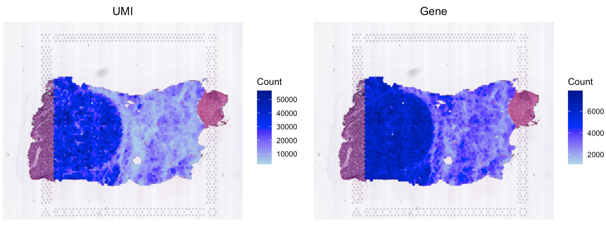
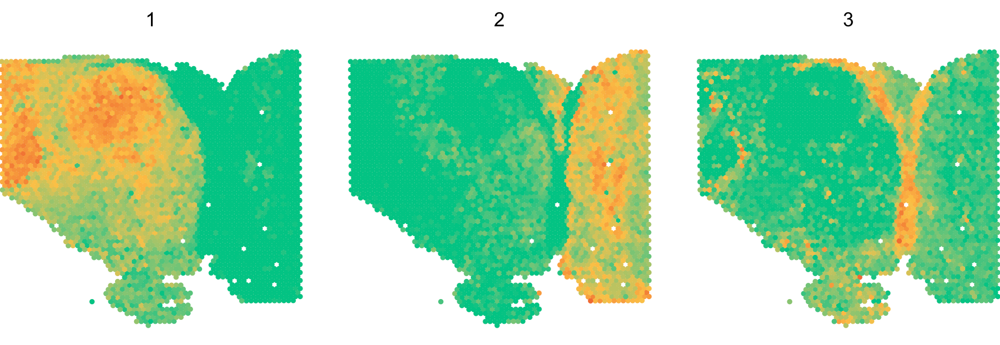
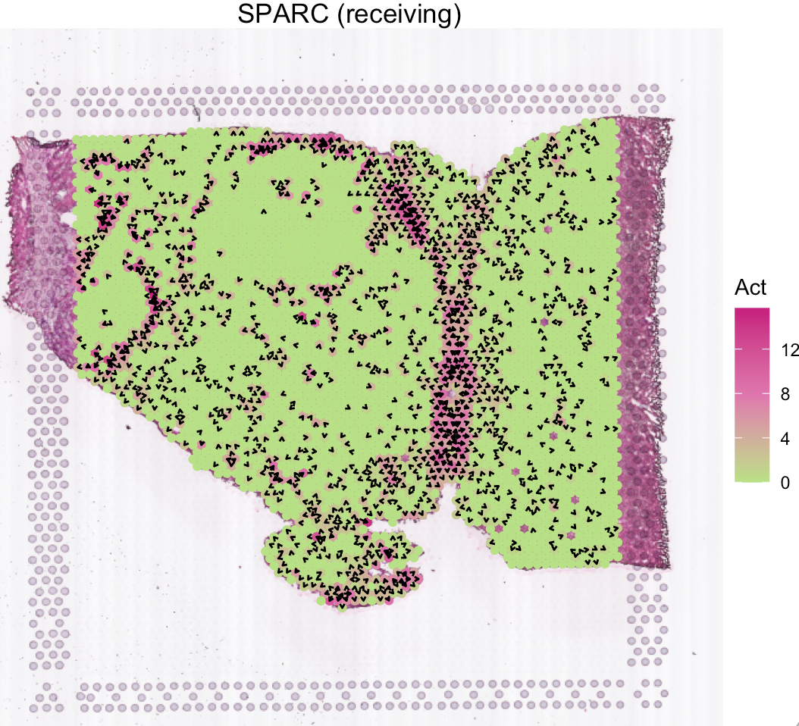
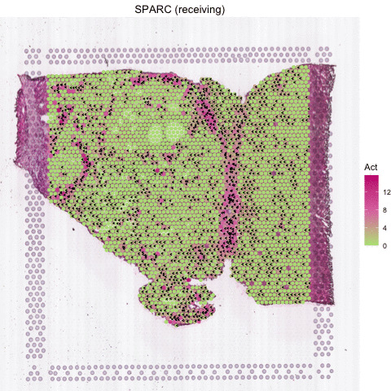
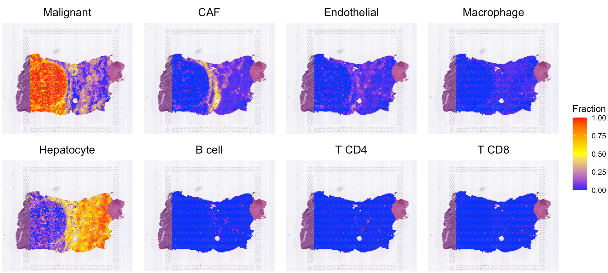
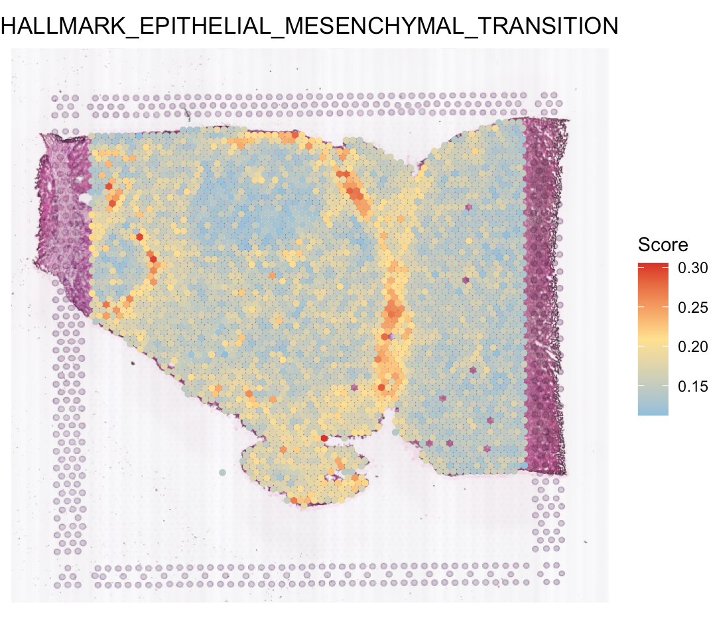

Signaling patterns and velocities for multi-cellular spatial transcriptomics data
Source:vignettes/stPattern.Rmd
stPattern.RmdThis tutorial demonstrates how to infer secreted protein activities of each spot for a liver cancer spatial transcriptomics (ST) sample from Visium platform (Paper). Each spot is 55 µm in diameter covering 1-10 cells. Further, SecAct provides additional modules to analyze the signaling patterns and velocities across the whole slide. Before running the tutorial, make sure that you have installed SecAct as well as our previous R package SpaCET. Here, SpaCET will be used to create a SpaCET object to store the ST data.
Read ST data to a SpaCET object
To load data into R, user can create a SpaCET object by using
create.SpaCET.object.10X. Please make sure that
visiumPath points to the standard output folders of 10x
Space Ranger. If the ST data is not from 10x/Visium, you can use
create.SpaCET.object instead
[details].
library(SecAct)
library(SpaCET)
# set the path to the data folder
dataPath <- file.path(system.file(package="SecAct"), "extdata/")
# load ST data to create an SpaCET object
visiumPath <- paste0(dataPath,"Visium_HCC/")
SpaCET_obj <- create.SpaCET.object.10X(visiumPath = visiumPath)
# filter out spots with less than 1000 expressed genes
SpaCET_obj <- SpaCET.quality.control(SpaCET_obj, min.genes = 1000)
# plot the QC metrics
SpaCET.visualize.spatialFeature(
SpaCET_obj,
spatialType = "QualityControl",
spatialFeatures = c("UMI","Gene"),
imageBg = TRUE
)
Infer secreted protein activity
After loading ST data, user can run
SecAct.activity.inference.ST to infer the activities of
1248 secreted proteins for each spot. The output are stored in
SpaCET_obj @results $SecAct_output $SecretedProteinActivity,
which includes four items, (1) beta: regression coefficients; (2) se:
standard error; (3) zscore: beta/se; (4): pvalue: two-sided test p value
of z score from permutation test.
# infer activity; 25 minutes
SpaCET_obj <- SecAct.activity.inference.ST(
inputProfile = SpaCET_obj,
scale.factor = 1e+05
)
# The running times mentioned here and onwards were obtained
# from our HPC with 20 cores and 200 GB of memory.
# show activity
SpaCET_obj @results $SecAct_output $SecretedProteinActivity $zscore[1:6,1:3]
## 50x102 3x43 14x94
## A1BG 4.179847 2.193798 -1.082260
## A2M 1.990219 7.513577 2.520423
## A2ML1 0.838544 0.298118 3.453744
## AADACL2 1.790729 -3.226144 2.709726
## ABHD15 3.224051 -1.534522 2.073572
## ABI3BP 1.588963 6.592146 13.925150Estimate signaling pattern
After calculating the secreted protein activity, SecAct could further estimate the consensus pattern from these inferred signaling activities across the whole tissue slide. This module contains two steps.
First, SecAct filters 1248 secreted proteins to identify
the significant secreted proteins mediating intercellular communication
in this slide. To achieve this, SecAct will calculate the
Spearman correlation of spots’ signaling activity and spots’ neighbors’
RNA expression. The p values were adjusted by the Benjamini-Hochberg
(BH) method as false discovery rate (FDR). The cutoffs are r > 0.05
and FDR < 0.01.
Second, SecAct employs Non-negative Matrix Factorization
(NMF) to estimate the consensus signaling patterns. A
critical parameter in NMF is the factorization rank k. User
can assign a number vector to k, e.g., k=2:5.
Then, SecAct.signaling.pattern would find the optimal
number of factors determined as the point preceding the largest decrease
in the silhouette value. This will take a while. Based on our
pre-calculation, k=3 is the optimal number of factors. To
save time, we directly run against k=3.
# estimate signaling pattern; 3 minutes
SpaCET_obj <- SecAct.signaling.pattern(SpaCET_obj, k=3)
# plot signaling pattern
SpaCET.visualize.spatialFeature(
SpaCET_obj,
spatialType = "SignalingPattern",
spatialFeatures = "All",
imageBg = FALSE,
legend.position = "none",
colors=c("#03c383","#fbbf45","#ef6a32")
)
Further, SecAct can identify secreted proteins
associated with each signaling pattern according to the matrix W from
NMF results. For one secreted protein (represented by a row in W), the
signaling pattern with a value at least twice as large as any other
pattern, is designated as the dominant pattern for that protein.
# identify secreted proteins dominated by pattern 3
pattern.gene <- SecAct.signaling.pattern.gene(SpaCET_obj, n=3)
# show these genes
head(pattern.gene)Calculate signaling velocity
Several secreted proteins with pattern 3 are related to epithelial-mesenchymal transition process, such as COL1A1, TGFB1, and SPARC. By integrating secreted protein-coding gene expression and signaling activity, SecAct can also infer signaling velocity at each spatial spot, indicating the direction and strength of secreted signaling. Let’s take SPARC as an example.
# show SPARC signaling velocity
SecAct.signaling.velocity.spotST(SpaCET_obj, gene = "SPARC") 
# show animated SPARC signaling velocity
SecAct.signaling.velocity.spotST(SpaCET_obj, gene = "SPARC", animated=TRUE) 
Deconvolve ST data
For the current ST data, user also can run our previous R package
SpaCET to estimate the cell lineages for each spot. Click
here for more details. Based on the deconvolution
results, we can see the interface region consists of fibroblasts,
macrophages, and endothelial cells.
# deconvolve ST data
SpaCET_obj <- SpaCET.deconvolution(
SpaCET_obj,
cancerType = "LIHC",
coreNo = 8
)
# show the spatial distribution of all cell types.
SpaCET.visualize.spatialFeature(
SpaCET_obj,
spatialType = "CellFraction",
spatialFeatures = c(
"Malignant","CAF","Endothelial","Macrophage",
"Hepatocyte","B cell","T CD4","T CD8"),
sameScaleForFraction = TRUE,
pointSize = 0.1,
nrow = 2
)
Calculate hallmark score
User also can run SpaCET.GeneSetScore to estimate the
hallmark scores for each spot. Click here for more details. You can see that Pattern 3 is
correlated with epithelial-mesenchymal transition (EMT).
# run gene set calculation
SpaCET_obj <- SpaCET.GeneSetScore(SpaCET_obj, GeneSets="Hallmark")
# visualize EMT
SpaCET.visualize.spatialFeature(
SpaCET_obj,
spatialType = "GeneSetScore",
spatialFeatures = "HALLMARK_EPITHELIAL_MESENCHYMAL_TRANSITION",
legend.position = "right",
imageBg=TRUE,
pointSize=1.2
)